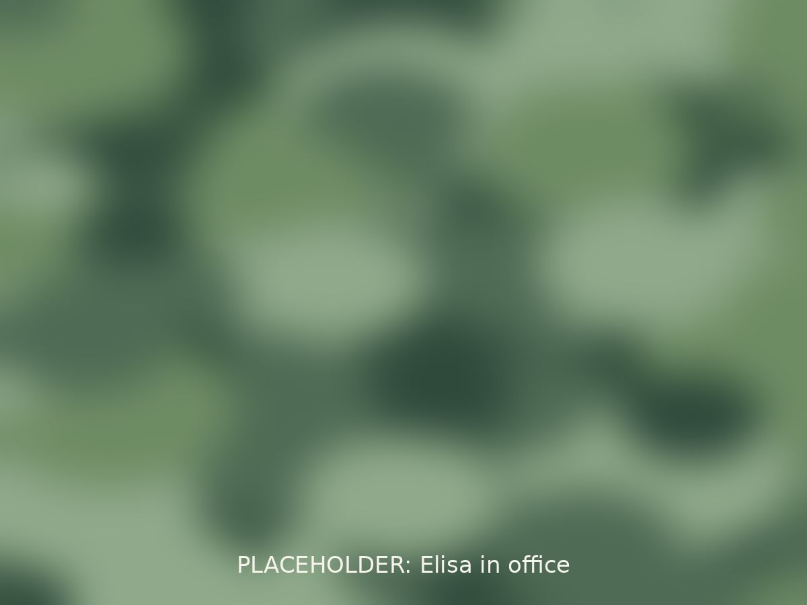

Seen, heard, and understood
I believe healing begins with feeling seen, heard, and understood. I build genuine, trusting relationships with clients and a safe space to explore life's challenges.
I have extensive experience supporting people who have experienced trauma. I also love working with families and understand the dynamics that affect relationships, communication, and emotional well-being.
As a mother and new grandmother, I bring both professional training and lived experience to my work with children, parents, and families. One of my greatest joys is helping clients bring a faith-based perspective into their goals.
Book a consultation“The curious paradox is that when I accept myself just as I am, then I can change.” Carl Rogers

A journey toward renewal
Together we'll explore the thoughts and behaviors that keep you stuck in patterns of hurt and heartache. Self-awareness is the space that allows for meaningful change.
We start with practical coping skills so day-to-day life feels more manageable, then work on the deeper roots. I draw on CBT, Cognitive Processing Therapy, and attachment-focused work, and I integrate Christian counseling principles for clients who want them.
“I'd be honored to support you on your journey toward renewal.”
Education & training
- MS in Counseling, Clarks Summit University (2019)
- Licensed Professional Counselor, Pennsylvania #PC020602
- Licensed Professional Counselor, New Jersey #37PC01265200
- DBT certificate, Behavioral Tech Institute (2025)
- Trauma-Focused CBT certificate (2019)
- Member, American Counseling Association
- 7 years in practice
“I have known Elisa Yost for over 30 years. She genuinely cares about others. She is kind, compassionate, knowledgeable, and very good at what she does.”
Let's see if we're a good fit
Call (570) 734-7798 or send a message for a free 15-minute consultation.
Book a free consultation